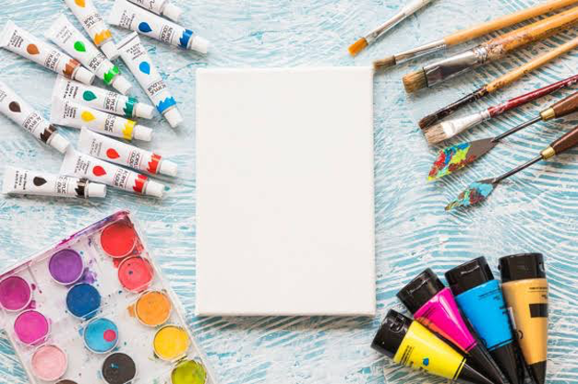

あなたは今人生をかけてやりたいことはありますか？
私、僕がしたいことってなんだろう
自分は今何がしたいのか
どんなことを成し遂げたいのか
わからない
誰とどんな環境で働きたいのか
誰に対して何を届けたいのか
今からできることってなんだろう
まずは自分を知ることから始めませんか？
そしてまず近い未来の明日を共にデザインしませんか？？
必ずしも良いことばかりではない。失敗なんてたくさんある。
『未来は明日の連続』
明日を描く意味は『人生を描くこと』

本当に必要なことなの？
いろんなことで迷うからこそ、自分の色を見つけて“自分の軸“をしっかりと作っていきませんか？
それはあなたの行動する上で一番重要な判断基準になります。
何が大事で、今何をすることが必要で、誰とどんなことをするのか。
人生を描く前に何が必要なのか？
自分の人生を自由に描いてみませんか？
人生というキャンバスに自分という色を持って自由に動く。
可能性は無限大。描くも描かないも自由。

自己紹介
経歴
- 学生団体 挑戦者交流会 代表
- BAR カタルシス イベントオーガナイザー
- FC 淡路島 インターン生
- 同志社大学企業部 立ち上げメンバー
-
5月
『『何か挑戦したい』という思いから行動を始める、いろんな社会人や経営者、学生の人たちに思いを話す挑戦の日々。
-
6月
『思いを話すだけでは何も成し遂げることができない。』『誰かに何かを届けることがしたい！！』と思い、いろんなことを考え始める。
-
7月
『始めての自主企画『夢デビュー！』を考え、達成のために行動する。
-
8月
『夢デビュー！』が終了。これから何をしていきたいのかがわからなくなり、人生をどう描いていくか迷う。
当時迷っていた時期に描いた絵『表象と本質』9月決死の思いで訪問販売の営業インターンに参加するが、本当にやりたいことか真剣に悩む。
10月挑戦者交流会を創設。同世代の子やいろんな人たちに価値を提供することが増える。
11月自己分析、ライフデザインを通して自分のやりたいこと、大切なことを見つける。 人生を自由に描くことの大切さ、楽しさ、難しさを知る。
サービス
なぜやるのか？
自分の能力、性質、好きなことから“どんな自分なのか"を共に考えていきます。
そのために
自己分析や能力診断、ゴール設定、これからやることは何かを共に考えます。
これからの自分が行動、生活していく上でのイメージ、考えを共にデザインしていきます。
時として、同じ価値観、興味、趣向など必要に応じて適切な人脈の提供をします。
さらに多くの自分を知っていくために言葉で表すことや絵を描くことを考えていきます。内容
1セッション（１時間）
自己分析を目的とし、ゴール設定、理念策定、軸の創造をTOMOに考える。
TOMOdesign（１ヶ月）
自分なりのゴールのデザイン、週１のセッションから達成のために必要なことをTOMOに考える。
体験者の声
立命館大学一回生
白鳥礼大圭佑との対話は、ストレスが全くないから、こっちからも色んな事を話そうと思えたし、圭佑からの引き出しにも、正直に答えることができた。
明日何をすべきか分からない、言ったら、受動的アクションしか生活の中にない人にとって、将来何をしたいか、どうなりたいのかを考えることで、明日をデザインするっていうのは素晴らしいなって単純に思ったし、めっちゃ共感。それこそ自分が受動的アクションの人間だったら、より良さを実感できたろうにと後悔です笑
サービスを受けてみて
このサービスを受けたことで、自分を知ることができた。それこそ1人だけで自己分析しても、知れるものには限界がある。そこに圭佑という視点が入ることで、より深く考察することができた！
そして明日から何をすれば良いのかというところがクリアになった。自分であれば、もっと自分を知るってところ。しかも、この明日からやるべきことってのは、圭佑が相手との対話の中から導き出したベストなものであるからこそ、自分の中での納得感がすごかった！関西大学１回生
平井登威圭佑の話の深堀り能力は並外れていて、自分では気づけなかった新しい自分や新しいものの見方などを得ることができます！何をすればいいか分からない、自分のことをもっと知りたいという人にとてもオススメです！南山大学１回生
柴田こころわかっていたようで、明確に言語化が出来なかった自分の軸を見つけました。問いかけられる質問はどれも難しくなく、過去や今の経験・感情のことで、楽しい対話の中から自身分析し、結論付けてくれる、とても良い時間でした。京都産業大学1回生
服部雅子松崎くんとお話して、一つ一つの質問のおかげで、自分の中で抱いていただけの理想や想像が言語化されていって、すごく頭の中がクリアになりました！
言語化したあと、じゃあ次はこうしていこう！という指針が決まって今はすごくワクワクというか、楽しい気持ちでいっぱいです。
次の行動をただするだけじゃなくて、その中でどうすれば自分にとっても価値になるのか、もっと有意義な行動になるのかをアドバイスしてくれたおかげで、また一つスキルアップした自分で明日を迎えられそうです🥳
行動したとしても、松崎くんのアドバイスがあるのとないのとじゃかなり捉え方も変わりそう！最後に
何かを始める、挑戦することは自分の人生と向き合うことが増える。
その中で自分の色を人生の中で出し、生きていく面白さは計り知れません。
私は『自分の人生』というものを考えた人たちがどんな絵を描くのか？
自分と向き合うからこそ、その人独自の絵が描けるのではないかと思います。
そこから自分は多くの人にその面白さや凄みを感じて欲しい。人生の個展＊お時間あればこちらも読んでください→料金
TOMOdesign
※１セッション代も含みます。- 中高生：3千円
- 大学一回生：３千円
- 大学二回生：5千円
- 大学三回生〜：８千円
応募はこちらからLINEを追加
2020年